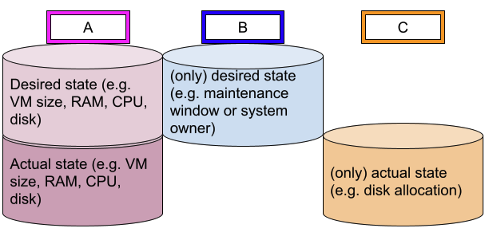
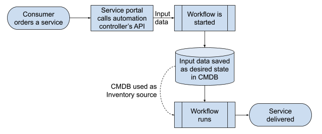

Pump up your ITIL with Automation
Pump up your ITIL with Automation
In the world of automation and agility, it seems that Information Technology Infrastructure Library (ITIL) doesn't have a role to play anymore, being marked as an "old school" framework. Can it be the end of the methodology after it served numerous IT organizations for so long as a guideline and blueprint for their processes?
This series of articles shows how automation, and more specifically Red Hat Ansible Automation Platform and the principles of Infrastructure as Code (IaC), can help bring some of the ITIL topics into the agile and automated bliss:
- Configuration management
- Change and release management
- Incident and problem management
So let's step into the topic of configuration management and what everybody still knows as CMDB (Configuration Management Database) even if ITIL has since long titled it as CMS (Configuration Management System). This name change was meant to highlight the fact that the function can be fulfilled by a combination of multiple databases and tools, but it won't matter here, so we'll stick to the infamous CMDB term.
Do you love your CMDB? Probably not, according to my experience with numerous customers. The data is generally outdated and wrong, considered useless, which means that its maintenance is considered a chore. This means that it's maintained with as little effort as possible, in a careless manner, making it even less up-to-date, and in a downward spiral you go.
To avoid the crash, we need first to understand that a CMDB and the related Configuration management have two main purposes:
- Document the desired state of your environment - this is too often done manually, with the admins required to maintain the configuration once in the "real world" and once in the CMDB. To do this, companies often populate the CMDB from the discovery of the environment, which leads to a database that documents the current state. Note that there is no clarity if it corresponds to the desired state or not.
- Support the change management process by allowing an analysis of the environment, e.g. to validate that there is enough disk space free on each server before installing the new bloated software. Based on the noted lack of trust in the data quality, it is generally ignored as part of the process.
Looking at the above shortcoming, we need first to more clearly structure our database, as it contains multiple kinds of data:
- Desired state data - this is information that comes from a service or change request and represents what one needs to have in one's environment.
- Actual state data - this is information discovered from the environment and representing its current state.
As data can be only desired, only actual or both, we have three categories, which we'll reference with A to C for sake of simplicity:

Because admins don't want to maintain the desired state twice, you use the desired state in your CMDB (type A and B) as inventory source for Ansible Automation Platform to configure your environment from it. Admins know that the better the data in the CMDB, the better the result in the real world, which leads to less work. That should be enough motivation to quickly improve the data quality of your CMDB.
Because the CMDB doesn't mix-up desired state and actual state for the data of category A, you can detect discrepancies, make a decision on how to fix it, and use Ansible again for automated remediation. This should help you quickly align reality with desired state, and have the right data to make decisions.
The data of type C isn't of much use for automation, and is meant for decision making in your change management process, though you could decide to skip a patch cycle if the disks are too full. That said, you shouldn't confuse this aspect with monitoring; monitoring a disk full situation and correcting it quickly belongs to incident management, not to configuration management.
Once you've reached this first stage, you can go to the next level and use Ansible Automation Platform to automatically populate the desired state in your CMDB.

Let's assume you have a service portal where customers can order new services or modify and decommission them, using a service catalogue and a dialog driving them through the choices they need to make. Using the input variables grabbed through the dialog, the service portal can, using the automation controller's API, trigger a workflow to fulfil the service. One of the first steps of the workflow is then to enter those input variables as desired state (type A and B) into the CMDB. It has the advantage that, should the workflow job fail, you still have the desired state documented and could trigger the action again once the root cause for the failure has been fixed.
It would now be nice to have commit, branch and tag functions like in Git to roll-back such changes easily. But perhaps someone will invent a CMDB with such functionality based on this article. In the meantime, connect Ansible Automation Platform to your CMDB and add value and quality to your CMDB with automation.
Learn more about using Ansible Automation Platform for configuration management
Take a video tour
This eight-minute overview video highlights the components and features found in the latest version of Ansible Automation Platform---and how they come together to deliver a comprehensive enterprise automation experience.